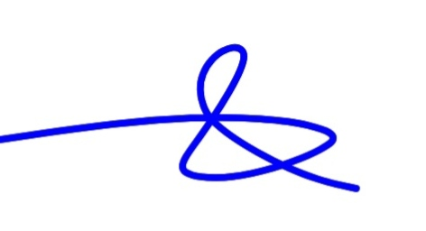

Leadership & Development
Leadership and development training through the YALI Network, strengthening leadership, civic engagement, professional development and community-oriented practice.
Leadership, technology, community service, innovation and commitment to sustainable development.

Founder & Project Lead
An Information Technology professional, community-focused leader and project initiator with a multidisciplinary background spanning information technology, digital literacy, community empowerment, emergency response, transport safety and practical technology solutions.
Professional profile and areas of experience
Academic background
Selected training, certifications and professional development
Leadership and development training through the YALI Network, strengthening leadership, civic engagement, professional development and community-oriented practice.
Training in sociology and social sciences through Seylar Academy, supporting understanding of people, communities and social development.
First Aid and related emergency-response training through St. John Ambulance.
Defensive driving training through St. John Ambulance, with emphasis on road safety, risk awareness and responsible driving.
Practical computer repair and QuickBooks training through Webb's Institute.
Professional development and certification exposure in Microsoft Azure and cloud technology services.
Practical development in digital literacy, Microsoft Office applications, online tools, ICT capacity building and technology adoption.
Professional training and development associated with Afralti, contributing to technical and professional capacity.
Technical, operational and leadership capabilities
Technology, community service, emergency response and leadership
Practical application of technology for community development
Principles guiding the Founder and GADEH
Build a responsible, innovative and sustainable institution capable of creating meaningful community impact.
Use technology, practical knowledge and creative solutions to address real-world challenges.
Promote inclusive participation, empowerment, collaboration and sustainable development.
A message of purpose, service and commitment
Official signature of the Founder
